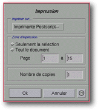

<!-- Documentation XQuad (c)1995-2000 AXENE contact axene@axene.org>
<html>

<head>
<title>Impression</title>
</head>

<body BGCOLOR="#FFFFFF" BACKGROUND="Images/back.gif" TEXT="#000000">

<p ALIGN="right">  </p>

<p><br>
<br>
La boîte de dialogue <i>&quot;Impression&quot;</i> permet de choisir les paramètres
d'impression avant de lancer celle-ci. L'impression porte sur le document actif et
s'effectue uniquement en PostScript®. <br>
<br>
</p>

<hr>

<p align="center"><br>
 <br>
<small><i>Photo d'écran : Boîte d'impression. </i></small></p>

<p><br>
</p>

<hr>

<p><br>
</p>

<h3>Partie supérieure de la boîte de dialogue&nbsp;:</h3>

<ul>
  <li><a NAME="printer_list">la liste déroulante &quot;<i>Imprimer sur...</i>&quot; permet de
    <b>sélectionner une imprimante</b> parmi celles définies dans les </a><a HREF="ConfigPrinter.html">fichiers de configuration</a> et qui sera utilisée pour
    imprimer le document. La liste contient une entrée particulière intitulée <i>&quot;Fichier&quot;</i>,
    qui, si elle est choisie, permet d'<b>imprimer dans un fichier</b> dont le nom sera choisi
    ultérieurement dans le sélecteur de fichier '<a HREF="Box_File_Selectors.html#fs_print_in_file">Impression dans le fichier...</a>' à la
    fermeture de cette boîte. <br>
    &nbsp;</li>
  <li><a NAME="button_selection_only">le bouton poussoir <i>&quot;Seulement la
    sélection&quot;</i> permet d'<b>imprimer seulement la sélection</b> qui peut etre
    composée de cellules ou de graphiques. </a><br>
    &nbsp;</li>
  <li><a NAME="button_entire_document">le bouton poussoir <i>&quot;Tout le document&quot;</i>
    permet d'<b>imprimer l'intégralité de la feuille de calcul</b>. Lorsque ce bouton est
    sélectionné, il est possible de choisir l'intervalle de pages à imprimer ; les valeurs
    des deux champs textes sont initialisées aux nombres de pages nécessaires à
    l'impression de l'intégralité de la feuille de calcul. </a><br>
    &nbsp;</li>
  <li><a NAME="page_from_to_textfields">les deux champs textes &quot;<i>Page</i>&quot; et
    &quot;<i>à</i>&quot; permettent de <b>choisir un intervalle de numéro de page à
    imprimer</b>. La valeur du premier champ doit être comprise entre 1 et la valeur du
    second champ qui doit être comprise entre la valeur du premier et le numéro de la
    dernière page du document. </a><br>
    &nbsp;</li>
  <li><a NAME="nb_copy_textfield">le champ texte &quot;<i>Nombre de copies</i>&quot; permet de
    <b>spécifier le nombre d'exemplaires</b> du document ou partie de document qui sera
    imprimé. </a></li>
</ul>

<p><br>
</p>

<h3>Partie inférieure de la boîte :</h3>

<ul>
  <li><a NAME="button_ok">&quot;Ok&quot; accepte les paramètres d'impression, ferme la boîte
    et <b>lance l'impression</b>. Si l'imprimante sélectionnée est <i>&quot;Fichier&quot;</i>,
    le sélecteur de fichier '</a><a HREF="Box_File_Selectors.html#fs_print_in_file">Impression
    dans le fichier...</a>' s'ouvrira pour choisir le nom du fichier cible et l'impression
    s'effectuera ensuite. <br>
    &nbsp;</li>
  <li><a NAME="button_cancel">&quot;Annuler&quot; <b>ferme la boîte</b> sans lancer aucune
    impression. </a></li>
</ul>

<p><br>
</p>

<hr>

<p ALIGN="right"></p>
</body>
</html>
